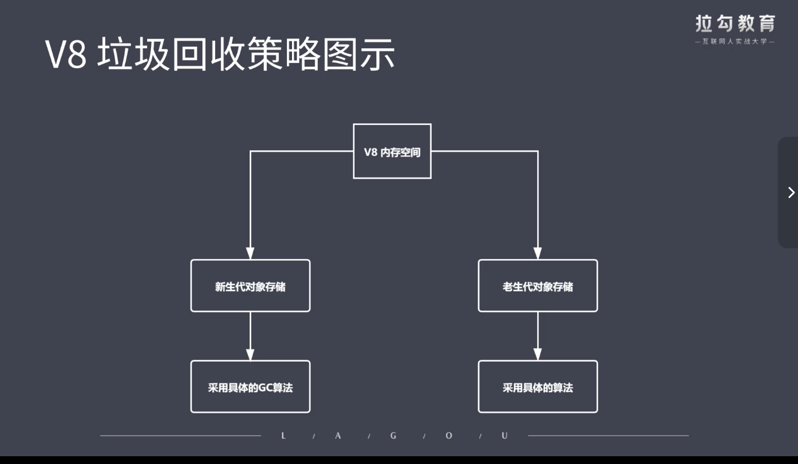
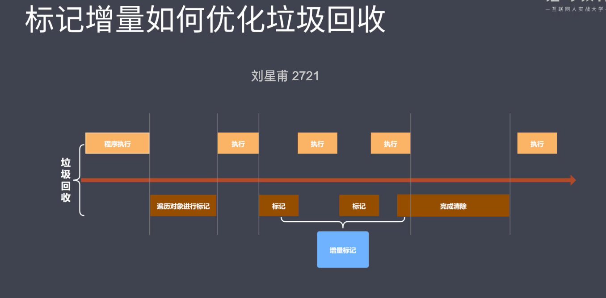

v8采用即时编译（以往需要将js源代码转成字节码，v8直接翻译成可执行的机器码）
v8内存设限（1.5g）
v8内存分配图
白色部分新生代 32M
右侧橘色老生代 1.4G
v8垃圾回收策略

采用分代回收的思想
核心思想：内存分为新生代（存活时间比较短的对象），老生代（存活时间较长的对象）
针对不同对象采用不同的算法
回收新生代的原理：采用复制算法 + 标记整理，将新生代空间再平分（使用空间换时间，总有一方处于空闲状态），使用空间为from，空闲为to，活动空间存储在from空间，标记整理后将对象拷贝至to，from与to交换空间完成释放
拷贝过程中可能出现晋升（新生代对象移动到老生代）触发条件：一轮gc后还活着的新生代需要晋升。to空间使用率超过25%
回收老生代对象：主要采用标记清除，标记整理，增量标记。首先使用标记清除完成垃圾空间回收，若晋升时而且当前存储区不够的时候 使用标记整理

v8常用的gc算法
分代回收
空间复制
标记清除
标记整理
标记增量